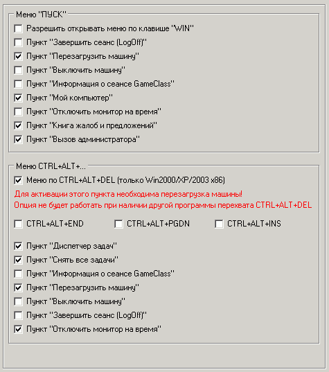

Интерфейс: Меню

Наиболее важные опции на этой вкладке:
Перехват CTRL+ALT+DEL
Для активации необходима перезагрузка машины. Данная функция не будет работать, если установлена другая программа перехвата. Поддерживаемые ОС - Win2000/XP/2003